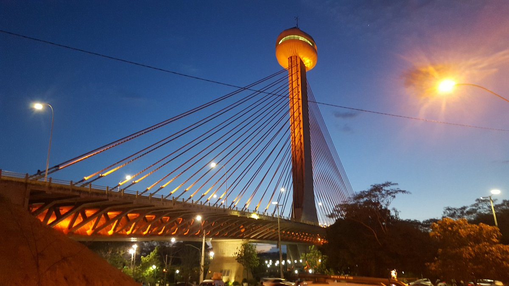
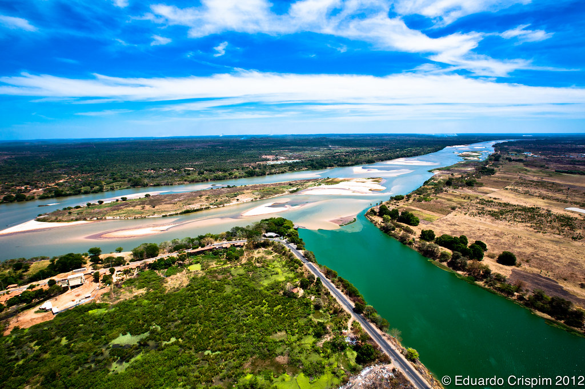
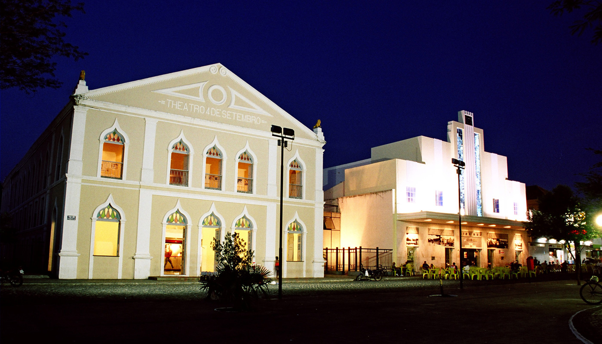

Teresina é a capital do estado do Piauí, conhecida como "Capital do Sol". É uma cidade marcada pela cultura, história e pelos seus pontos turísticos.

A Ponte Estaiada Mestre João Isidoro França é um dos principais cartões-postais de Teresina. Possui um mirante com uma bela vista da cidade e do Rio Poti.

O Encontro dos Rios é um ponto turístico onde acontece a união dos rios Poti e Parnaíba. O local possui uma paisagem natural muito conhecida pelos visitantes.

O Teatro 4 de Setembro é um dos espaços culturais mais importantes de Teresina, recebendo apresentações, eventos e manifestações artísticas.